กิจกรรมที่เข้าร่วม
นอกจากเรื่องเรียนแล้ว ฉันยังให้ความสำคัญกับการทำกิจกรรมที่หลากหลาย ทั้งเพื่อผ่อนคลาย พัฒนาตนเอง และเปิดรับประสบการณ์ใหม่ๆ กิจกรรมเหล่านี้ไม่ได้เป็นเพียงงานอดิเรก แต่เป็นส่วนสำคัญที่ช่วยให้ฉันได้เรียนรู้ทักษะที่จำเป็น เช่น การทำงานร่วมกับผู้อื่น ความคิดสร้างสรรค์ และการแก้ปัญหา
ระดับมัธยมศึกษาตอนปลาย
ในช่วงนี้ ฉันเริ่มมองหากิจกรรมที่เกี่ยวข้องกับสิ่งที่สนใจในอนาคตทั้งด้านวิชาการ และด้านกิจกรรมการละเล่นร้องเพลงพื้นบ้านที่ดิฉันสนใจ
ผ่านการอบรม "โครงการค่ายนวัตกรรมและปัญญาประดิษฐ์"
โดยได้รับความรู้ในเรื่องของการเขียนโปรแกรม และการบังคับหุ่นยนต์
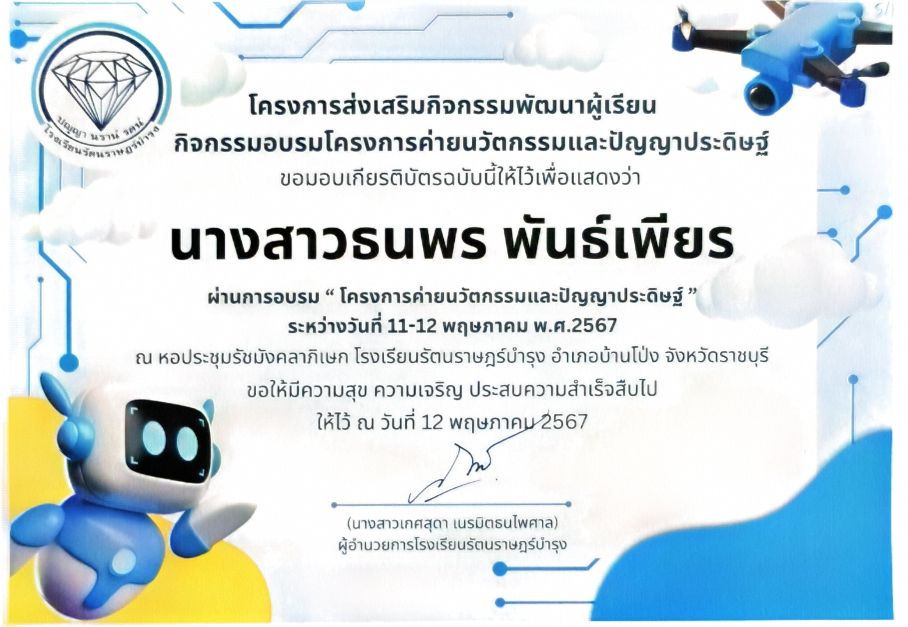ผ่านการอบรมโครงการส่งเสริมศักยภาพผู้เรียนด้านทักษะวิชาการ กิจกรรมพัฒนาผู้เรียนด้านหุ่นยนต์
ทำให้เข้าใจในเรื่องของการประกอบหุ่นยนต์ การเขียนโปรแกรม และการประยุกต์ใช้ในสถานการณ์ต่างๆ
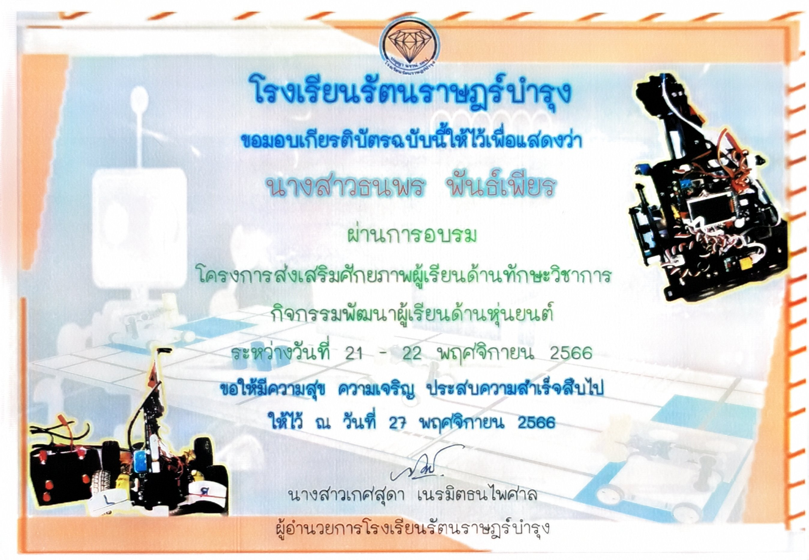รางวัลชนะเลิศ กิจกรรมการแข่งขัน การประกวดเดินแบบชุดประจำชาติอาเซียน
เป็นผู้ร่วมออกแบบและจัดทำชุดในการแข่งขัน
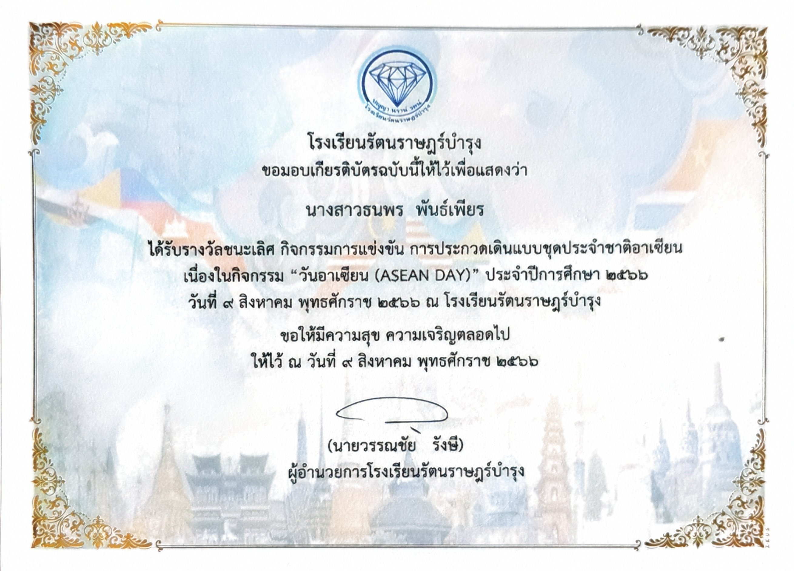เข้าร่วมกิจกรรมจิตอาสา กิขกรรมอนุรักษ์ธรรมชาติและสัตว์ป่า "ค่ายรัตนฯ อาสา กล้าความดี จากพี่สู่น้อง"
ได้รับหน้าที่เป็นผู้นำการนันทนาการและดูแลน้องๆที่ร่วมกิจกรรม
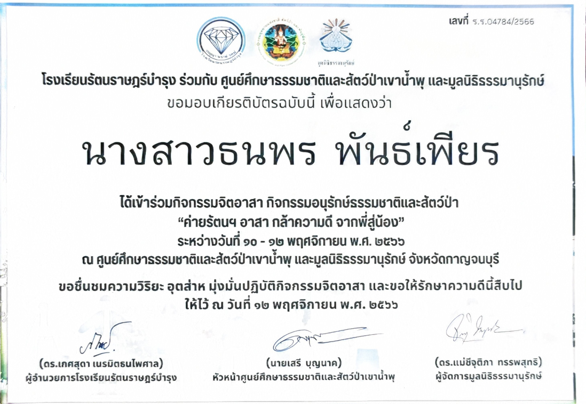เข้าร่วมโครงการศึกษาแหล่งเรียนรู้สู่โลกกว้าง กิจกรรมการทำปฏิบัติการทางชีววิทยา ณ มหาวิทยาลัย
ได้ทำความเข้าใจเกี่ยวกับโลกของแมลงมากยิ่งขึ้น เรียนรู้ถึงการสตาฟสิ่งมีชีวิต และการใช้ชีวิตของแมลง
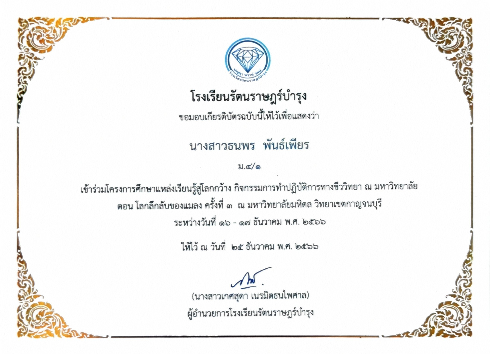รับหน้าที่ประธานพาเหรด การแข่งขันกีฬาภายใน Dokkaew Game 2566
ฝึกทักษะการวางแผนงาน และการออกแบบขบวนให้ออกมาตรงตามหัวข้อที่กำหนด
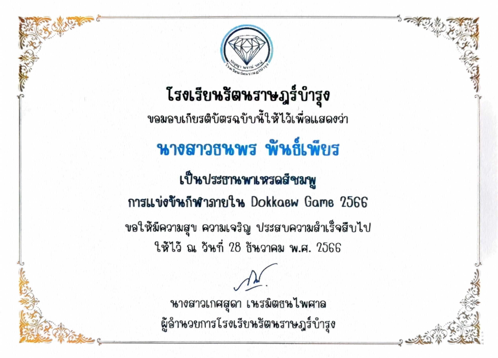รางวัลรองชนะเลิศันดับที่ 1 บาสเกตบอลหญิง ระดับชั้นมัธยมศึกษาตอนปลาย
การฝึกความสามัคคี และทักษะการวิเคราะห์เกม
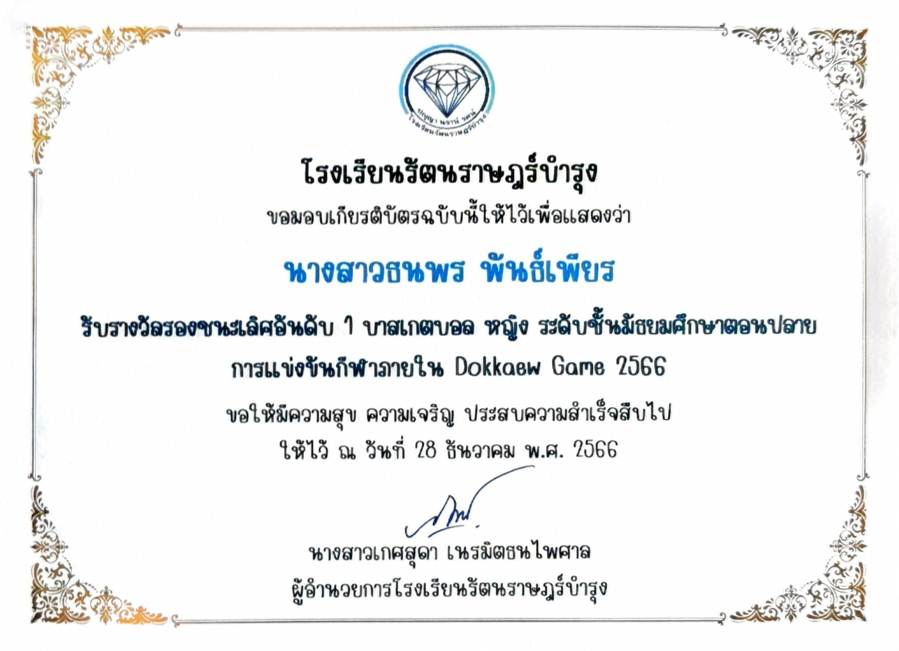ผ้ปฏิบัติหน้าที่ประธานชุมนุมได้รับการประเมิน เกณฑ์คุณภาพชุมนุมระดับ ดีเยี่ยม
ได้ฝึกการเป็นผู้นำและผู้บริหารจัดการระบบภายในชุมนุม เพื่อให้ทุกคนปฏิบัติตามกฎระเบียบ
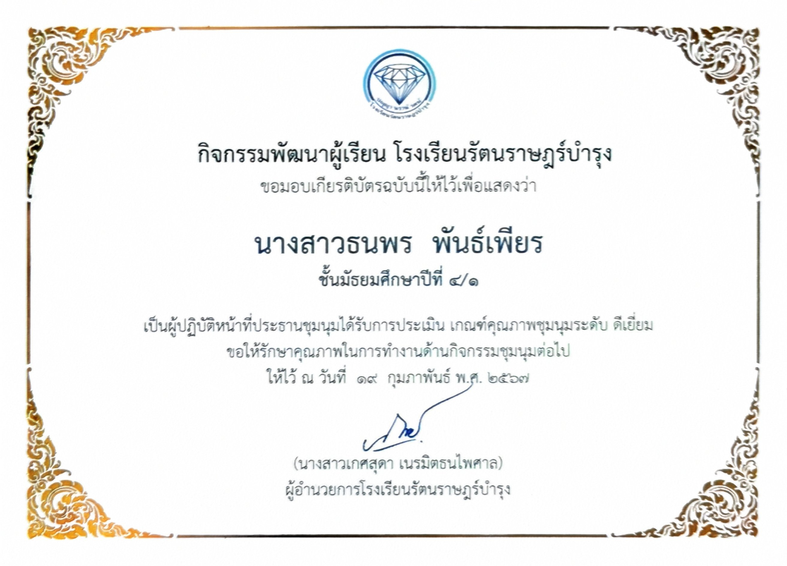ผ่านการอบรมเชิงปฏิบัติการ "ท่วงทำนอง ตีกลองรำมะนา"
การฝึกทักษะเกี่ยวกับท่วงทำนองที่หลากหลายในการบรรเลงเพลงพื้นบ้าน
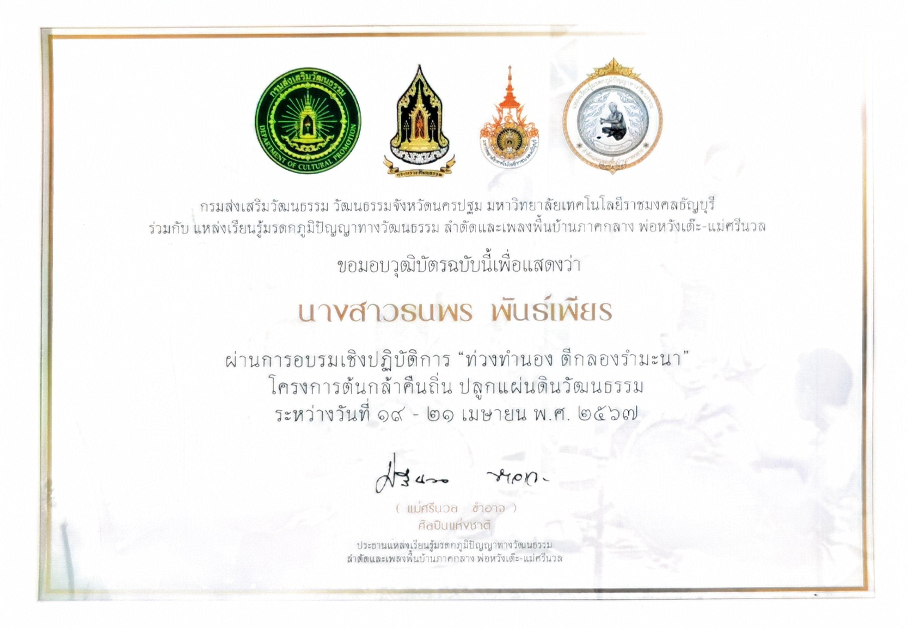ผ่านการอบรมเชิงปฏิบัติการ ค่าย"เพราะกล้าพันธุ์ก่งเพลงพื้นบ้าน" รุ่นที่ 8
ได้รับรู้ถึงความหลายหลากของเพลงพื้นบ้าน และการพบเจอเพื่อนใหม่ๆ
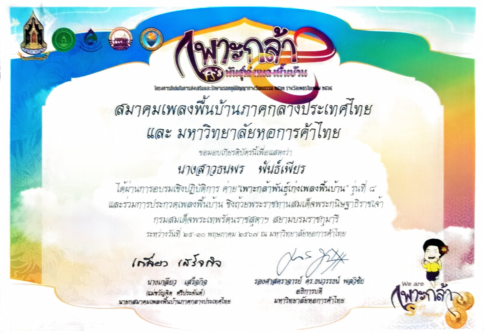ได้รับรางวัลในการประกวดเพลงพื้นบ้านชิงรางวัลถ้วยพระราชทาน
ซึ่งได้รับตำแหน่ง กล้าฉับไว ในโครงการ
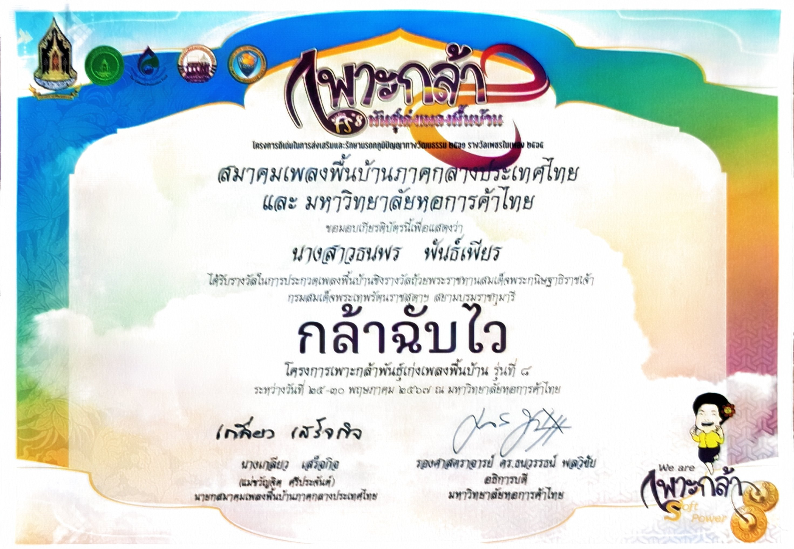ได้รับรางวัล ขวัญใจนักเพลงพื้นบ้าน โครงการปรพกวดเพลงพื้นบ้านภาคกลาง ชิงถ้วยพระราชทาน
ฝึกทักษะการกล้าแสดงออก และความมั่นใจในตนเอง
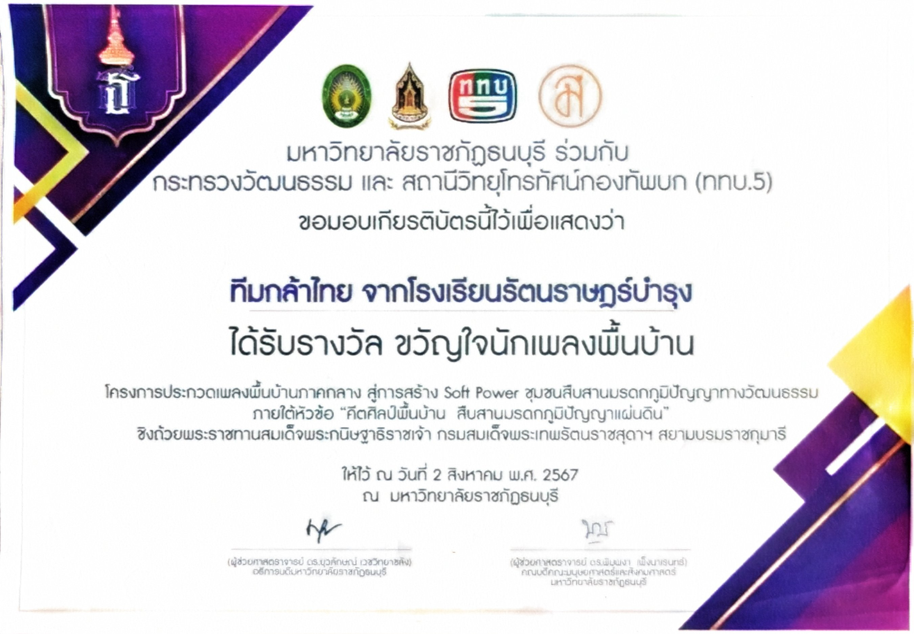ผ่านการเข้าร่วมกิจกรรม "การถอดรหัสข้อมูล Atbash และ Caesar"
เป็นการเรียนผ่านแพลตฟอร์มออนไลน์ เรียนวิธีคิด ผ่านวิธีโค้ด
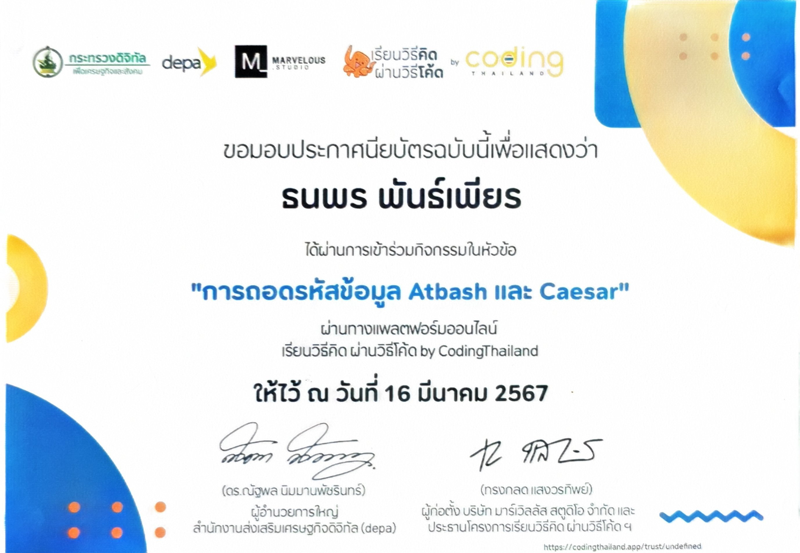ผู้นำเชียร์สีชมพู การแข่งขันกีฬาภายใน Dokkaew Game 2567
ฝึกทักษะการเป็นผู้นำที่ดี เพื่อให้ทุกคนปฏิบัติตามกิจกรรมจนสิ้นสุดการทำกิจกรรมด้วยดี
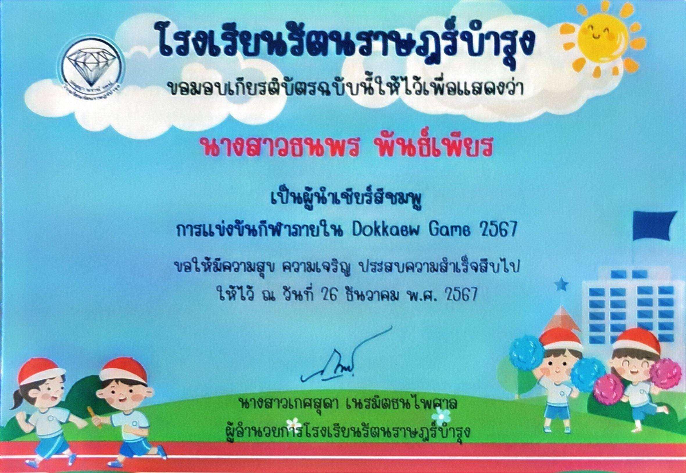รางวัลชนะเลิศ ชักเย่อ หญิง ระดับ ม.ปลาย การแข่งขันกีฬาภายใน Dokkaew Game 2567
การฝึกความสามัคคีภายในทีม และความอดทน
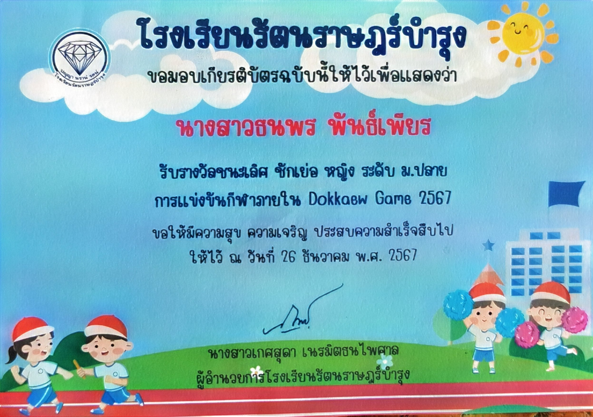รางวัลชนะเลิศ วอลเลย์บอล หญิง ระดับ ม.ปลาย การแข่งขันกีฬาภายใน Dokkaew Game 2567
ฝึกความสามัคคี การวางแผน และการเล่นอย่างเป็นระบบของทีม
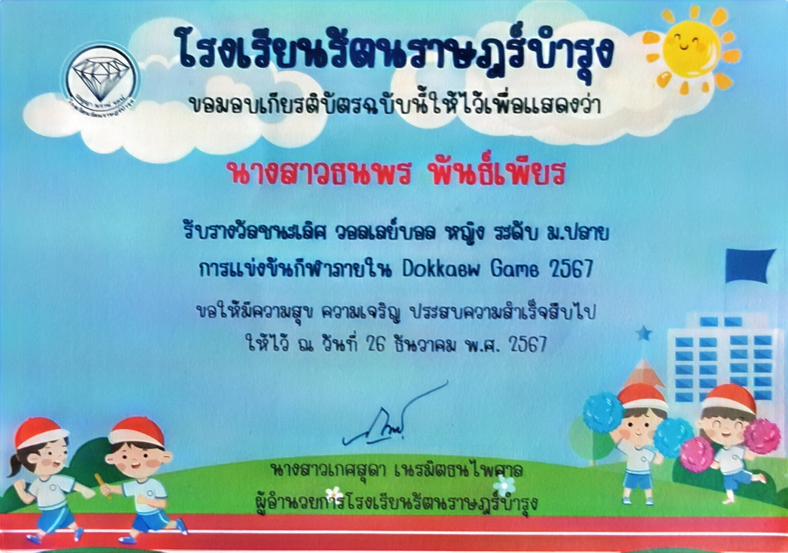เข้าร่วมโครงการ กล้าเสนอ กล้าทำดี เด็กราชบุรีร่วมพัฒนาชาติ
ร่วมทำจิตอาสาพัฒนาโรงเรียน ณ โรงเรียนบ้านหนองไก่ขัน จังหวัดราชบุรี
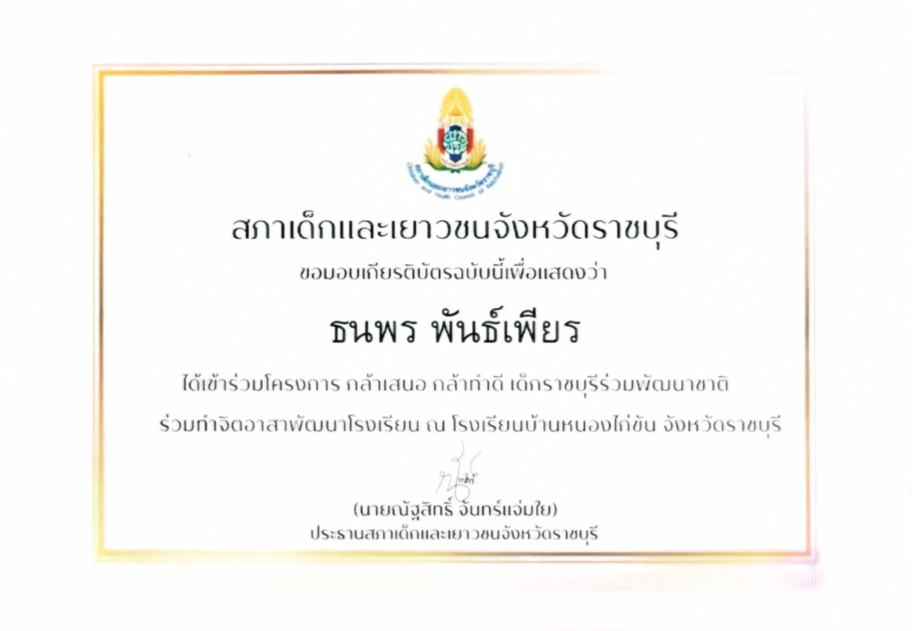เข้าร่วมกิจกรรมจิตอาสา ทำด้วยรักษ์ พิทักษ์ความดี สร้างดลกอนาคต
ณ อุทยานะรรมชาติวิทยาตามพระราชดำริ สมเด็จพระกนิษฐาธิราชเจ้า กรมสมเด็จพระเทพรัตนราชสุดาฯ สยามบรมราชกุมารี อ.สวนผึ้ง จ.ราชบุรี
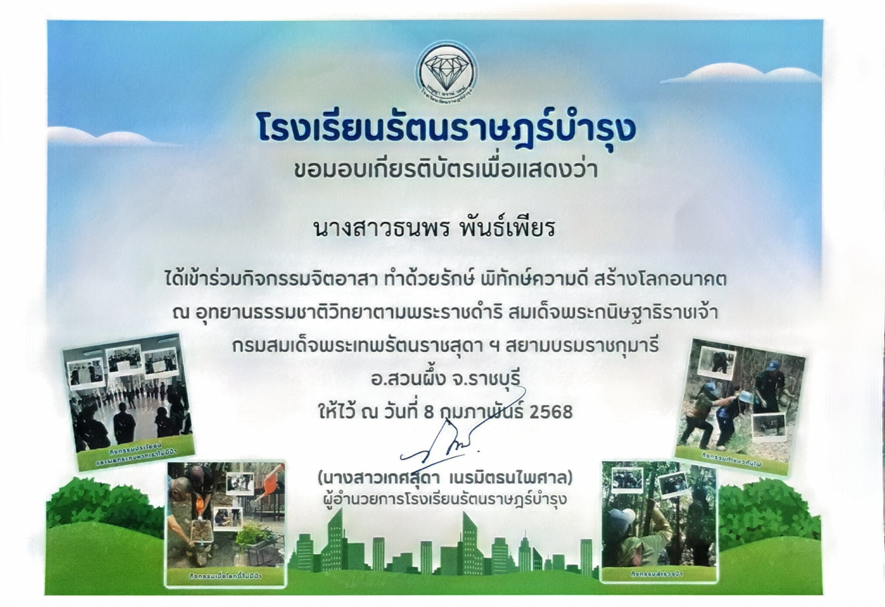ระดับมัธยมศึกษาตอนต้น
เมื่อโตขึ้น ฉันเริ่มสนใจกิจกรรมที่ได้พัฒนาทักษะที่หลากหลายเพื่อค้นหาตนเองมากขึ้น
เข้ารับการอบรมโครงการเสริมทักษะชีวิตสำหรับเยาวชนในสถานศึกษา ปี 2563
โดยทำให้ได้เข้าใจถึงการใช้ชีวิตในสถานศึกษาและการเคารพกฎระเบียบมากยิ่งขึ้น
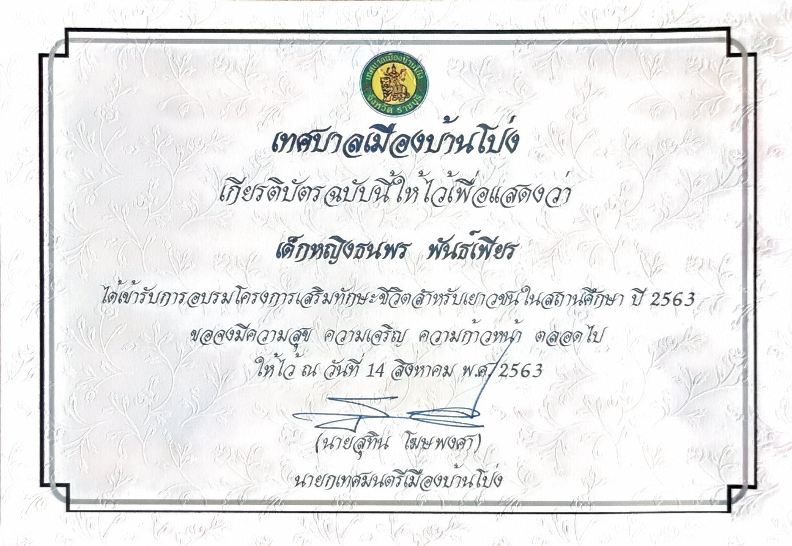ผ่านการฝึกอบรมหลักสูตรลูกเสือจิตอาสาพระราชทาน
โดยได้ฝึกทักษะการเอาตัวรอด และการช่วยชีวิตผู้อื่น
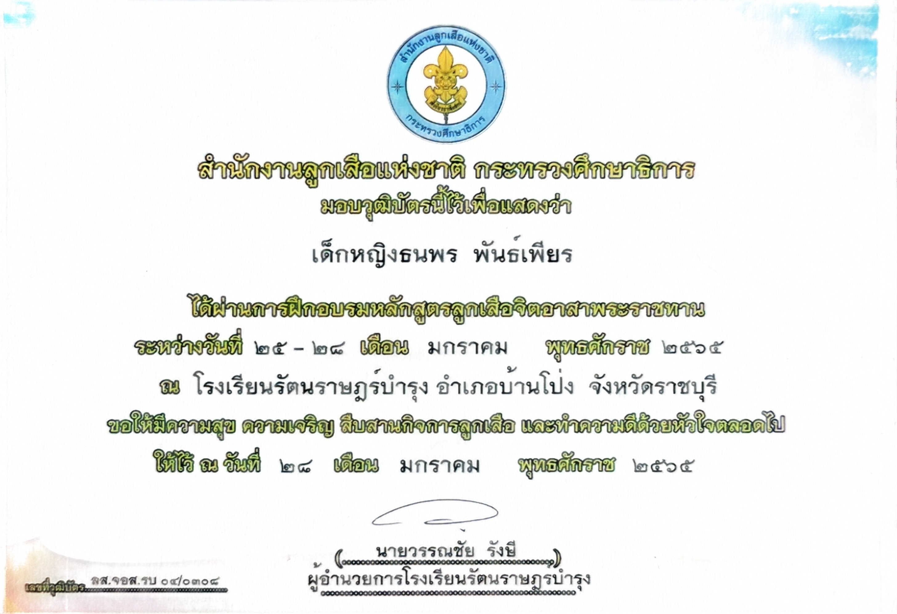ได้เข้าร่วมกิจกรรม การแสดงละครอาเซียน
เนื่องในกิจกรรม "วันอาเซียน (ASEAN DAY) ประจำปีการศึกษา 2565"
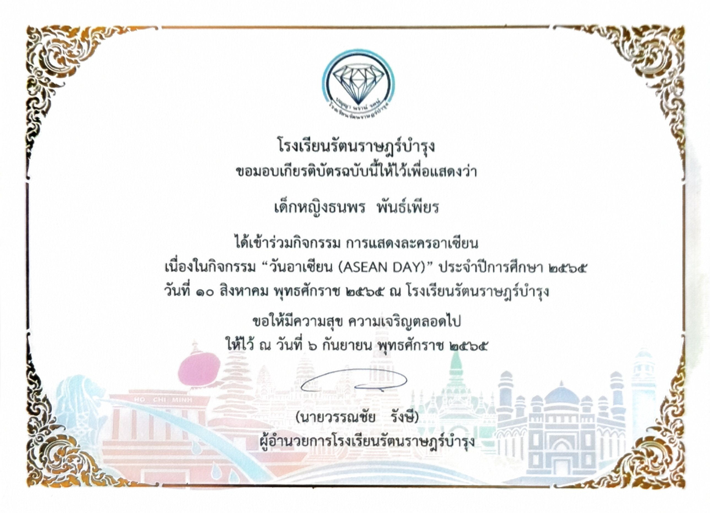ผ่านการอบรมเชิงปฎิบัติการลำตัดและเพลงพื้นบ้านภาคกลาง
เพื่อสร้างเสริมสุขภาวะที่ดี และลดปัจจัยเสี่ยง
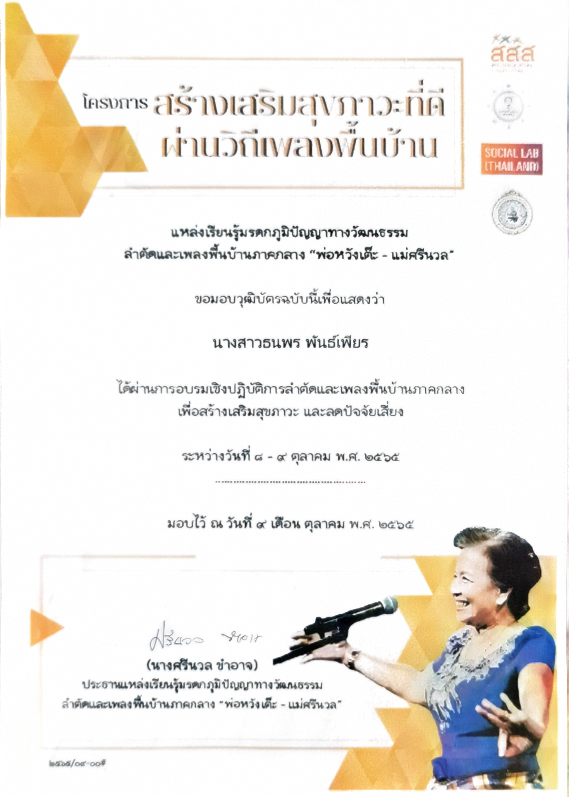ระดับประถมศึกษา
ในช่วงวัยเด็ก ฉันได้เข้าร่วมกิจกรรมที่ปลูกฝังจิตสำนึกให้เยาวชนตั้งแต่เด็ก
โครงการการศึกษาเพื่อต่อต้านการใช้ยาเสพติดในเด็กนักเรียน (D.A.R.E.ประเทศไทย)
โดยได้ให้คำปฏิญาณตนว่า จะหลีกเลี่ยงแรงกดดันและแรงจูงใจต่างๆ ที่จะนำไปสู่การใช้ยาเสพติด
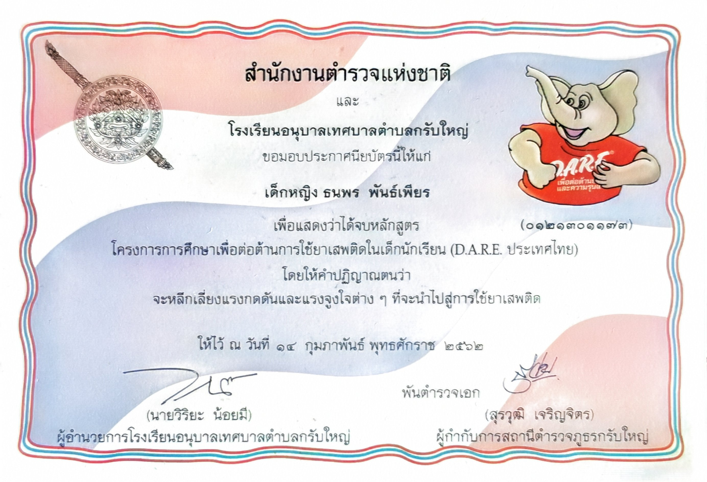การอบรมโครงการสนามจราจรเยาวชนเสริมสร้างจิตสำนึกความปลอดภัย
เป็นการอบรมเพื่อให้รู้ถึงความปลอดภัยบนท้องถนน ไม่ว่าจะเป็นการเดินข้ามถนน หรือการปฏิบัติตามกฎจราจร
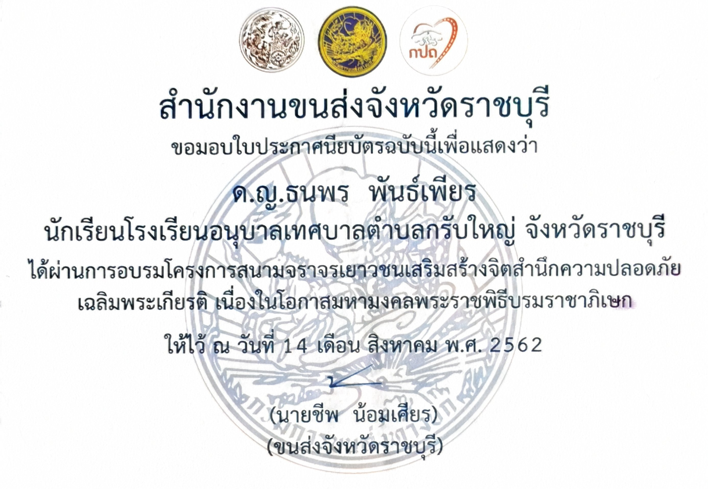เข้าร่วมกิจกรรม การบรรเลงดนตรีสากล เพลง คำมั่นสัญญา
โครงการวันสุนทรภู่ ประจำปี 2560
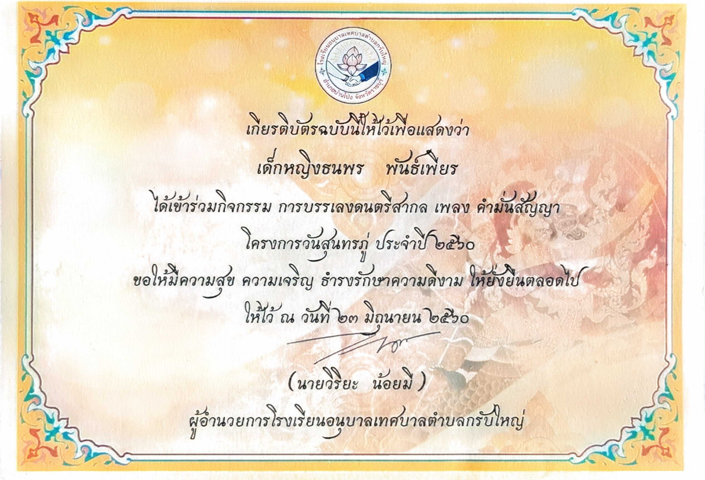